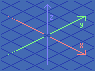
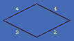
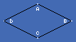
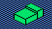
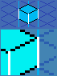
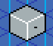
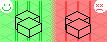
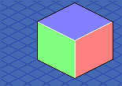
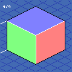
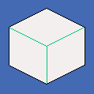

TiliX is a modular system for isometric pixel blocks developed by eBoy. It hopes to make it easier to work with pixel modules in a collaborative environment, and to establish a base for generative approaches.
Grid dimensions have been carefully chosen, and allow for flexible divisions. Additionally, the concepts of 'Dual Pixels' and 'Right Pixels' are introduced. These are aimed to avoid clusters of lines.

Axes Objects with larger xy-values are placed in front.

Sides Upper right side is 1, then goes clock-wise.

Corners Top corner is A, then goes clock-wise.Cell 7×7 Dual PxThe Grid is a good starting point: TiliX assets ↗Block = 4×4 cellsCell Divisions Divide by 2, 3, 6Clusters TiliX is about trying to avoid clusters of lines.

Draw Iso Lines on the grid pixels to avoid clusters.Dual Pixels sit at the heart of the isometric grid. They encapsulate the 2/1 proportion inherent to isometric pixel art.Right Pixels are the single pixel on the right side of dual pixels. They serve as anchors for positioning, and for drawing lines.

Vertical Lines should sit on Right Pixels only.

Do not mirror objects as vertical lines would end up on left pixels.

Be consistent, and avoid the left pixels for Vertical Lines, or you'll have to deal with ugly cluster lines.

Cube Size is 4×4×4 Cells — but it's easy to divide — which makes the size very flexible.

Tilted cube faces in 1/4 steps.

Module examples